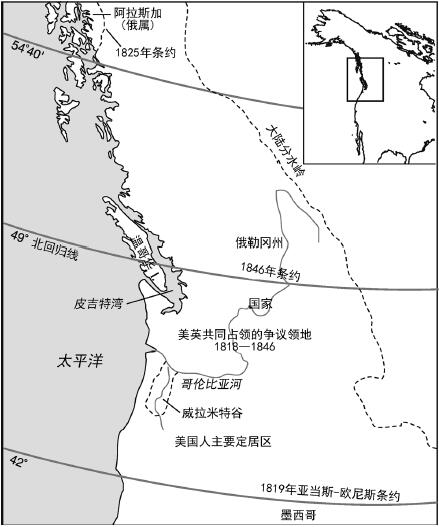

人们有时认为衡量一个民族共同体存在的标准应该是公民身份。让我们回到中世纪的波兰历史来考虑这种可能性。如果说让大部分人都有公民身份是决定民族存在的标准，那么中世纪的波兰就不是民族了。它最多是“贵族国家”。因为自15世纪以来，是贵族通过国会——色姆（sejm）——来决定中世纪波兰的政治事务的。然而在历史学家研究19世纪的英格兰和法兰西这样的现代民族时，公民身份的标准却引发了一些复杂情况。
在中世纪的波兰，只有贵族才能充分参与国民政治事务。如果因此而不把那时的波兰归入民族之列的话，那么到了1832年，英格兰只有3.2%的人口有权选举国会，而法兰西只有1.5%的人口有公民选举权，因而是不是也不该把英格兰和法兰西归入民族之列呢？况且，如果坚持说只有在绝大多数人口都享有受到认可的法律权利并承担相应义务时，民族才存在，那么当19世纪的波兰领土被普鲁士、奥地利和俄国瓜分时，又该如何定义没有国家政府的波兰？我们会为此陷入困境，因为这一时期波兰的集体自我意识确实持续存在着。
毋庸置疑，作为政府的一种决策形式，民主促进了领地内民族共同体的稳固。究其原因，正在于它承认绝大多数人都享有法律权利并能参与政治。然而，把公民这一现代理念上升到衡量民族是否存在的标准，忽视了民族是在领地范围内集结的亲属关系这层含义，仅仅把民族视为一种政治决策形式。坚持认为公民身份是民族存在的标准，也因此坚持在前现代社会和现代民族之间划清界限的历史学家们不得不：
（1）在论述中尽可能减少对前现代社会领地内民族的亲属关系给予足够的、持续的重视；
（2）过高估计现代民族文化的统一程度；
（3）当在分析中遇到没有国家政府的民族及“地方主义”的情形时，他们就陷入了困境。
可以肯定，要承认前现代社会存在，分析者就必须接受各种含混不清的情况，以及各种不完整的发展状态。现实中的民族社会关系总是由各种不同的关系交织在一起，相互影响，不断变化。这也是现代民族国家的情况，就连对民族成员身份的判定都处于不断变化中。不断更改的移民法和公民法可以说明这一点（例如，1971和1981年的《英国国籍法》以及1990年的《美国移民法》）。
前现代和现代领地内的亲属关系显然是有区别的。社会学家爱德华·希尔斯和S.N.爱因史达特明确指出，现代社会的特点是社会边缘群体更大程度地参与中央的活动，这也说明在这样的领地内文化更加统一。民主体制就是这种参与的例子。在这种体制中大多数国民和公共教育都享有自治权，社会地位也可以通过个人成就得以快速改变，而不是死板地由出身决定，由严格的社会等级来控制。然而，现代社会和我们所举的四个例子在中央和地方的关系方面是不同的。对于这种不同所作的更好的解读是：它只是程度上而非本质的不同，因为在我们所举的例子中也有成文的法律规范，有帝王对社会负责的理念（维护灌溉系统、维护法律、维护和平），有中央对民族宗教承担的如建造神殿、庙宇和教堂的义务。
显然，公众选举的首相或总统与帝王之间的区别很重要。但是，帝王也是人们尊崇的对象，并且这种尊崇也是维系领地内亲属关系的纽带。如历史学家马克·布洛克所述，日本天皇和法国国王都被尊为能帮助病人神奇康复的治愈者。可以肯定，爱国主义情感反映的领地内的民族关系在中央和地方区别不明显的情况下会更稳固、更显著。但这并不否认“保家”的意识超越了家庭界限，且延伸到了前现代社会呈现出的“卫国”的层次。对中央的认可使这种延伸——包括它所反映的领地内的共同体——成为可能。举例来说，人民对中央的认可表现在帝王被视为国家和平的守护者，中央管辖的地域内有同样的风俗习惯（包括宗教和语言），以及包含神话传说因素的历史。
让我们再回到民族形成中的神话传说因素来为本章作个总结。有一定领土范围的社会虽然有可能在纯粹契约的基础上形成，但这种情况还从未发生过。这并不是要否认建立在统治者和被统治者契约基础之上的欧洲宪法传统的重要性，更何况这是统治者和被统治者都必须服从法律管制的情况。然而，在现代民族关系的形成过程中，一个遥远的、常常带有神话色彩的过去，抑或一个人们认为史无前例、无从查证的情况，在时间的帮助下又一次把民族关系的独特性合理化了。
强调民族历史悠久并不意味着真正相信民族的独特性，这也许只是算计着如何利用民族矛盾。比如在印度，据史诗《罗摩衍那》所述，为了铲除位于阿约提亚的、具有475年历史的穆斯林清真寺，印度教民族卫队和人民党打了一场长达八年的战争。清真寺最终在1992年12月6日被摧毁，因为人们认为它是印度教神毗湿奴的化身——拉姆——的出生地。史诗《罗摩洐那》的大部分内容可能著于两千多年前。人们对过去情有独钟，大概更多是因为它是对历史的创造而不是恢复。例如日本神道教的复兴始于18世纪，而它最终成为明治维新时期（1868）的“国教”。在这两个例子中，神话传说都被加以利用，以便把民族主义的观念融于领地内的社会关系之中。对于印度来说，是印度教民族主义（“印度教徒特质”）；对于日本来说，是国体（一种“民族特质”）。这两个例子都企图否认民族形成过程中真实的复杂情况。对民族关系更开明的一种理解，则更容易接受这种复杂情况。就印度而言，旁遮普地区的锡克教徒、喀拉拉邦的基督教徒和克什米尔地区的穆斯林，这些不同的宗教信仰都与印度必然是印度教国家这一观点相矛盾；而日本有1400多年的佛教历史，这与日本从不受外来影响的观点也是相矛盾的。
对过去的热衷，也可能包含模棱两可的情况。例如，赫尔曼纪念碑于1875年在德国北莱茵威斯特法伦的德特莫尔德附近的条顿堡森林内建成，用以纪念公元9世纪切鲁西人的军事首领阿米乌尼斯——也叫赫尔曼——在与罗马将领瓦鲁斯指挥的军队作战中取得的胜利。这座纪念碑代表了德国民族的独立，却也肯定了人人都怀疑的古代切鲁西人和现代德国人之间的亲属关系。
对同一段历史的热衷也会因现今形势的不同而不同。1989年，正值塞尔维亚人和克罗地亚人的冲突白热化到即将爆发种族灭绝战争之际，前者举行了科索沃战役600周年庆典，纪念1389年他们在拉查尔王子的率领下被奥斯曼帝国打败。但在1939年，面临德国即将入侵的形势，这场战役却被描述为标志着南斯拉夫而非塞尔维亚的独立。
图9 赫尔曼纪念碑
神话传说的成分也可见于美利坚合众国的传统。《独立宣言》宣告了一个“不言自明的事实”，即“所有人生来都是平等的”，由“造物者赋予某些不可剥夺的权力”，这归根结底源于犹太——基督教传统。随着美国传统的发展，创立民族的先辈们的传说也应运而生，掩盖了先辈们之间在理解平等和权力的含义方面的分歧。比如自治是联邦概念还是民族概念。这些模糊不清的问题所引起的一些争端，好不容易才通过美国内战得到解决。战争的结果通常都有利于增进民族统一。然而，新的神话又出现了，比如在大西洋和太平洋之间设立民族界限是美国人民“天赐的命运”这一说法。与古代以色列一样，美国的地理位置并不确定，特别是西北边的界限是以49度划分还是以更北边的54.40度划分。但的确有人声称这些界限是上帝所设。
现代印度、日本、德国、塞尔维亚和美国仅是很多可举的例子中的少数几个而已。这些例子说明，包括这些现代民族在内的所有民族，在形成和持续过程中都强调跨代的领地内亲属关系、“史实”或“不可剥夺的权力”这样的观念。这种观念虽不能用亲身经历来印证，却为领地内的社会秩序提供了理由。在无法依靠经验得到证实的一系列观念中，最明显的例子便是宗教。本章讨论的所有前现代和现代领地内的亲属关系中，宗教一直都是其形成和持续存在的因素。因此，现在我们就要讨论民族和宗教的关系问题。

图10 1846年前的俄勒冈领土，表明了美国西北部边界的不确定性